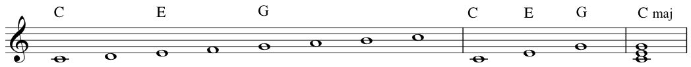
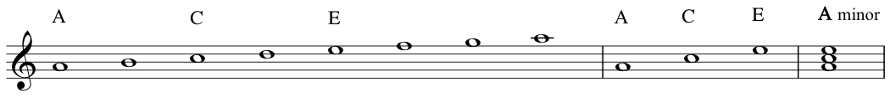
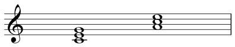
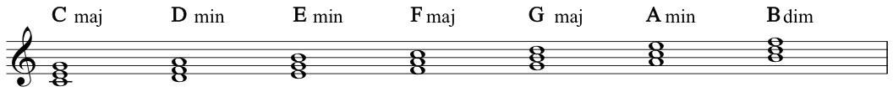

A triad is a three-note chord. Deriving the C major triad from the C major scale:
Deriving the A minor triad from the A natural minor scale:
Here are the two triads standing alone, C major and A minor:
We can say here that C major is the tonic of the C major scale, and A minor is the tonic of the A minor scale.
Here we have all the triads as played by Zack starting at about 5 minutes in the video:
